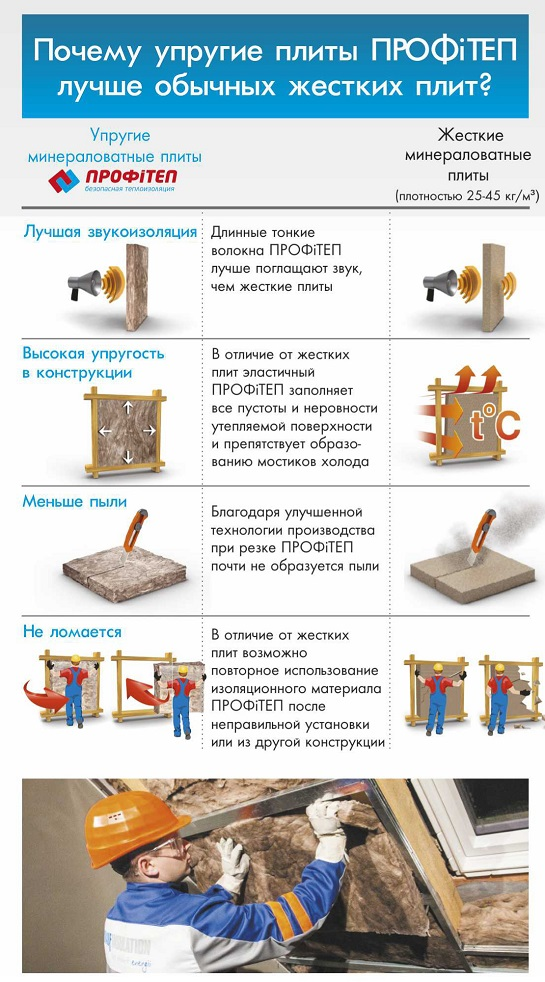
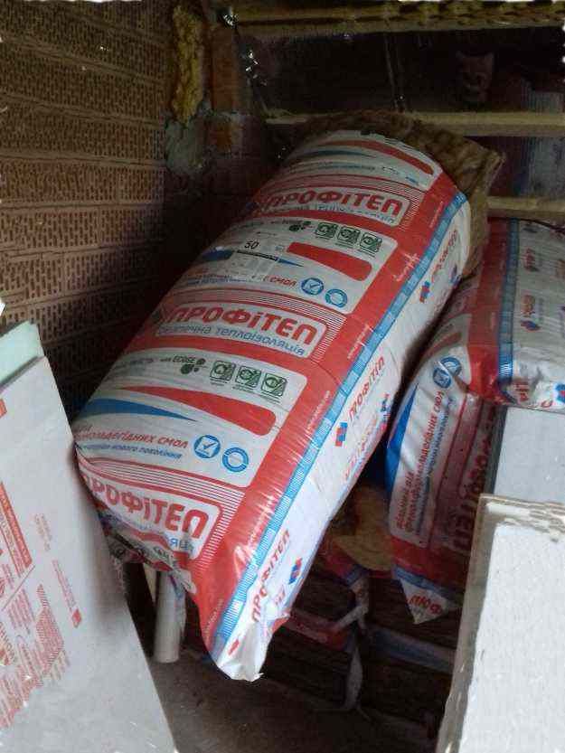

Обзор. Кнауф Профитеп – минеральная вата
Кнауф Профитеп – минеральная вата толщиной 50 и 100 мм
Производство минеральной ваты осуществляется по инновационной технологии Ecose Technology, исключающей возможность применения компонентов на основе фенолформальдегидных смол, небезопасных для человеческого организма. Кнауф Профитеп сохранит комфортный микроклимат в помещении летом, таким образом сокращается расход электроэнергии за счет уменьшения использования кондиционером.
Свойства: Минеральная вата Профитеп является негорючим утеплителем, что улучшает пожарную безопасность конструкции здания. Кроме того, она обладает хорошими звуко- и теплоизоляционными свойствами, что позволит сократить расходы в отопительный сезон.
Монтаж: Монтаж минеральной ваты Кнауф Профитеп с легкостью выполняется на любые конструкции, возможна укладка материала в два и более слоев.
Характеристики:
- размеры – 1200х610х50/100 мм;
- упаковка 50мм/24листа – 12 м2;
- упаковка 100мм/12листов – 6 м2;
- плотность – 14 кг/м3.
Ссылки:


Обзор - подготовка поверхности, грунтовка, нанесение краски-подложки, нанесение декоративной штукатурки. Фото. Видео обзор.
Обзор - монтаж ванной фурнитуры. Тест на прочность.
Навесить и подключить бойлер не сложно. Но нужно подключить так, что-бы в случае необходимости, с него можно было легко слить воду. Для монтажа нам понадобится...